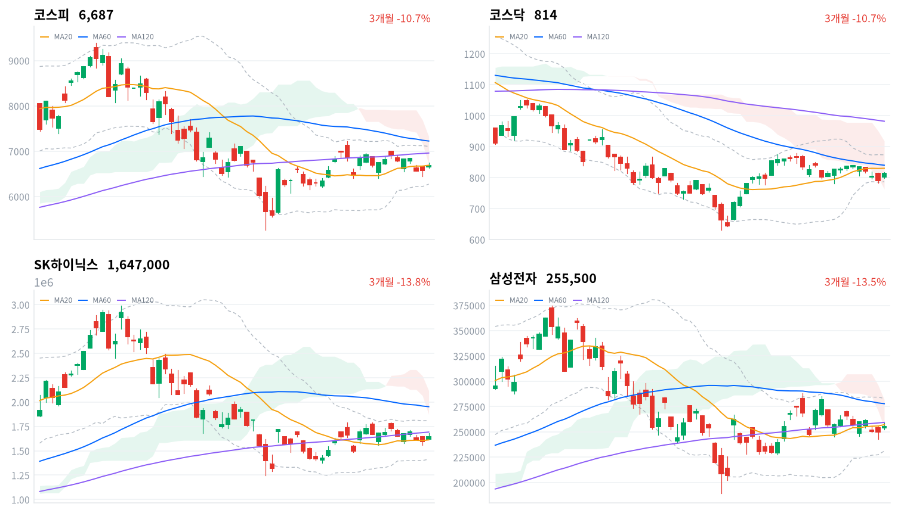
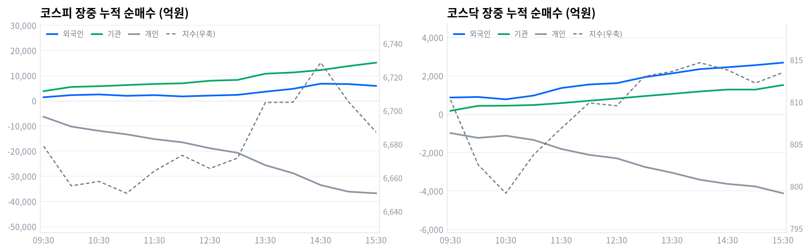

코스피는 오늘 1.64% 올라 6,687로, 코스닥은 2.95% 올라 814로 마감했다. 간밤 크리스토퍼 월러 연준 이사의 비둘기파 발언에 미국 금리가 내리자 삼성전자·SK하이닉스가 반등을 이끌었다.
코스피에서는 외국인이 4,796억원, 기관이 1조6,694억원을 순매수했고 개인이 3조7,229억원을 순매도했다(당일 잠정). 60개 업종 중 56개가 오르며 업종 전반이 고르게 강했다.
코스피와 코스닥은 오늘 나란히 급등해 각각 1.64%, 2.95% 올랐다. 간밤 크리스토퍼 월러 연준 이사의 비둘기파 발언에 미국 국채금리가 내리자 삼성전자·SK하이닉스가 나란히 반등하며 지수를 끌어올렸다.
금리 부담이 풀리자 외국인·기관이 동반 매수로 돌아섰다는 게 핵심이다. 코스피에서 외국인이 4,796억원, 기관이 1조6,694억원을 순매수했고(당일 잠정), 이는 8월 말 이후 이어지던 순매도·관망 기조와는 다른 방향이다. 반도체와반도체장비 업종은 171종목 중 148개가 함께 올라(+2.99%) 대형주 두 종목만이 아니라 업종 전체가 반등했다는 뜻이다.
위험 노출은 다음 세션까지 확대한다. 코스피 프로그램 매매의 방향성 바스켓인 비차익은 1,930억원 순매도였는데도 기관은 위에서 본 규모 그대로 순매수를 지켜, 매수가 프로그램 밖에서 폭넓게 들어왔다는 뜻이다. 코스닥도 외국인·기관이 동반 순매수하며 코스피보다 큰 폭으로 올라 쌍끌이 매수의 힘이 두 시장 모두에서 확인된다.
코스피가 일목 기준선(6,382)을 하향 이탈하면 이 판단을 재검토한다. 오늘 반등에도 코스피는 아직 20일 이동평균(6,691)을 회복하지 못했고, 기준선까지 무너지면 오늘의 반등이 하루짜리 되돌림에 그쳤다는 뜻이 된다. 외국인이 다시 순매도로 돌아서거나 미국 반도체 관세 확대가 현실화되면 같은 방향의 위험이라 확대 기조를 접는다.
전일(9월3일) 미국 증시는 3대 지수가 모두 올랐다. S&P500이 1.06%, 나스닥이 1.4%, 다우가 1.18% 상승했다.
같은 시간대 아시아도 대체로 강세였다. 닛케이가 1.26%, 항셍이 1.74%, 대만가권이 1.51% 올랐고 상해종합만 -0.30% 소폭 내렸다. 아시아 평균은 1.05%였는데 코스피(1.64%)는 이보다 0.59%포인트 높게 마쳐 역내에서 상대적으로 강했다.
한국 정규장이 열린 시간대 미국 선물은 E-mini S&P500이 0.02%, 나스닥 선물이 0.17% 오르며 거의 움직이지 않았다. 코스피는 전일 종가(6,579)보다 1.14% 높은 6,654에서 출발해 갭업으로 하루를 시작했다.
코스피는 오전 9시 6,656에서 출발해 오후 2시반 6,729까지 이 시각까지의 고점권을 넓혔다가, 소폭 되돌리며 강보합으로 정규장을 마쳤다.
코스닥은 오전 9시 801에서 출발해 오후 2시 815까지 오른 뒤, 그 부근에서 좁게 움직이며 정규장을 마쳤다.
원/달러 환율은 오전 10시 1,359원으로 하루 중 가장 높았다가 정규장 마감 무렵 1,349원까지 내렸고, 1,351원으로 정규장을 마쳤다.
오늘 상승은 간밤 크리스토퍼 월러 연준 이사의 비둘기파 발언으로 미국 10년물 국채금리가 내린 영향이 컸다. 국내 반도체 대형주 투자심리가 살아나며 삼성전자·SK하이닉스가 지수 상승을 이끌었고, 외국인·기관도 매수로 돌아섰다(당일 잠정). 코스닥에서도 외국인·기관이 동반 순매수로 돌아서며(당일 잠정) 같은 방향을 확인시켰다.
코스피는 오늘 1.64% 올라 6,687로 마감했다. 20거래일 저가(6,159)와 고가(7,217) 사이에서는 정확히 가운데 자리다.
20일 이동평균(6,691)에도 거의 붙어 마감해, 최근 한 달 등락 구간의 가운데로 돌아왔다. 장중에는 6,633에서 6,746까지 오갔다.
코스닥은 2.95% 올라 814로 마쳤다. 20거래일 저가(777)에 가깝고 고가(879)와는 아직 거리가 있어, 최근 한 달 등락 구간의 아래쪽 3분의 1 수준에 자리한다. 장중에는 799에서 817까지 오갔다.
| 지수 | 종가 | 등락률 | 시가 | 고가 | 저가 | 전일 종가 |
|---|---|---|---|---|---|---|
| 코스피 | 6,687.21 | +1.64% | 6,654.36 | 6,746.14 | 6,632.77 | 6,579.48 |
| 코스닥 | 813.50 | +2.95% | 802.32 | 816.54 | 798.97 | 790.21 |
전일 종가(6,579)보다 75포인트 높은 6,654에서 갭업 출발한 코스피는 오전 9시반 6,679까지 올랐다. 이후 10시 6,655까지 되돌리며 오전 내내 6,650~6,680 사이에서 오갔다.
오후 1시반 6,705로 레벨을 높인 뒤 2시반 6,729까지 올라 이 시각까지의 고점권을 만들었다. 이후 소폭 밀리며 3시 6,705를 거쳐 정규장을 마쳤다.
코스닥은 전일 종가(790)보다 12포인트 높은 802에서 갭업 출발했다. 오전 9시반 810까지 급등했다가 10시반 799까지 밀리며 상승분을 대부분 반납했다.
이후 완만히 올라 낮 12시 810을 회복했고, 오후 2시 815까지 오르며 이 시각까지의 고점권을 만들었다. 이후 좁은 범위에서 움직이며 정규장을 마쳤다.
20일 이동평균 대비로는 코스피가 0.05% 낮은 자리에서 마쳤다. 코스닥은 20일 이동평균(830) 대비 2.01% 낮아 코스피보다 이동평균에서 더 멀리 떨어져 있다.
코스피의 장중 변동폭은 113포인트(시가 대비 저가 -22포인트, 고가까지는 +92포인트)로, 오전 갭업 이후 밀린 폭보다 오후에 더 오른 폭이 컸다 — 하루의 대부분을 상승 흐름으로 보낸 셈이다. 코스닥도 시가(802) 대비 저가는 -3포인트에 그친 반면 고가까지는 +14포인트 더 올라 같은 패턴을 보였다.

코스피·코스닥·SK하이닉스·삼성전자 3개월 일봉에 이동평균(20·60·120)·볼린저밴드·일목균형표 구름대를 오버레이했다. 상승 캔들은 녹색, 하락 캔들은 적색으로 표시된다.
코스피(6,687)는 이동평균이 혼조로 뒤섞인 채 20일 이동평균(6,691)과 일목 구름 아래에서 마감했다. 20일 이동평균을 회복하면 20일 고점(7,217)까지 반등 여지가 열리고, 일목 기준선(6,382)이 무너지면 20일 저점(6,159)까지 지지가 빈다.
코스닥(814)은 이동평균이 역배열로 무너진 채 20일 이동평균(830)을 바로 위 저항으로 두고 일목 구름 안에서 마감했다. 20일 이동평균을 넘어서면 20일 고점(879)까지 반등 여지가 열리고, 20일 저점(777)이 무너지면 일목 기준선(761)까지 지지가 빈다.
SK하이닉스(165만원)는 이동평균이 혼조인 가운데 20일 이동평균(161만원)을 지지로 두고 일목 전환선(167만원)을 바로 위 저항으로 두며 마감했다. 전환선을 넘어서면 120일 이동평균(169만원)까지 반등 여지가 있고, 20일 이동평균이 무너지면 일목 기준선(154만원)까지 지지가 빈다.
삼성전자(26만원)는 이동평균이 혼조인 가운데 일목 구름 안에서 20일 이동평균(26만원) 바로 아래 마감했다. 20일 이동평균을 회복하면 60일 이동평균(28만원)까지 반등 여지가 있고, 일목 구름 하단(25만원)이 무너지면 볼린저 하단(23만원)까지 지지가 빈다.
위 레벨은 이동평균·볼린저밴드·일목균형표와 스윙 고저를 기계적으로 계산한 값이며 투자 권유가 아니다.
| 주체 | 순매수(억원) |
|---|---|
| 개인 | -37,229 |
| 외국인 | +4,796 |
| 기관 | +16,694 |
| 주체 | 순매수(억원) |
|---|---|
| 개인 | -4,125 |
| 외국인 | +2,599 |
| 기관 | +1,609 |
코스피에서는 외국인과 기관이 나란히 순매수했다(당일 잠정). 외국인이 4,796억원, 기관이 1조6,694억원을 사들였고, 개인이 3조7,229억원을 순매도해 그 규모를 대부분 받아냈다.
이는 지난 이틀(9월2일·9월3일) 외국인·기관이 소극적이거나 순매도로 기울었던 흐름과는 다른 방향이다. 반도체 대형주 반등에 힘입어 매수 규모가 뚜렷하게 커졌다.
코스닥에서도 외국인(2,599억원)·기관(1,609억원)이 함께 순매수했고 개인만 4,125억원 순매도했다(당일 잠정). 코스피보다 코스닥의 상승폭(2.95%)이 더 컸던 이유도 이 쌍끌이 매수에서 찾을 수 있다.

누적 순매수(억원), 정규장 09:30~15:30 30분 앵커 기준. 지수는 우측 축.
| 시각 | 코스피(억원) | 코스닥(억원) | ||||
|---|---|---|---|---|---|---|
| 개인 | 외국인 | 기관 | 개인 | 외국인 | 기관 | |
| 09:30 | -6,364 | +1,395 | +3,816 | -984 | +868 | +176 |
| 10:00 | -10,269 | +2,236 | +5,489 | -1,234 | +896 | +434 |
| 10:30 | -11,967 | +2,505 | +5,775 | -1,119 | +775 | +444 |
| 11:00 | -13,365 | +1,963 | +6,243 | -1,342 | +970 | +477 |
| 11:30 | -15,253 | +2,232 | +6,674 | -1,811 | +1,363 | +579 |
| 12:00 | -16,515 | +1,724 | +6,928 | -2,118 | +1,547 | +699 |
| 12:30 | -18,874 | +2,051 | +7,953 | -2,298 | +1,616 | +816 |
| 13:00 | -20,711 | +2,342 | +8,284 | -2,742 | +1,927 | +943 |
| 13:30 | -25,609 | +3,599 | +10,760 | -3,050 | +2,128 | +1,060 |
| 14:00 | -28,801 | +4,741 | +11,243 | -3,413 | +2,347 | +1,184 |
| 14:30 | -33,523 | +6,779 | +12,195 | -3,632 | +2,447 | +1,284 |
| 15:00 | -36,145 | +6,629 | +13,777 | -3,763 | +2,554 | +1,282 |
| 15:30 | -36,789 | +5,899 | +15,139 | -4,120 | +2,684 | +1,519 |
코스피 외국인은 방향 전환 없이 종일 순매수 기조를 이어갔다. 순매수 규모는 오전 9시1분 864억원에서 오후 2시39분 6,996억원까지 늘었는데, 이 시점은 코스피가 오후 2시반 6,729까지 이 시각까지의 고점권을 만든 순간과 거의 맞물린다. 코스피 기관도 방향 전환 없이 오전 9시1분 594억원에서 오후 3시21분 1조5,139억원까지 매수 규모를 꾸준히 늘렸다.
정규장 마지막 관측에서 코스피 기관 순매수(1조5,139억원)의 대부분은 프로그램·선물 연계 성격이 강한 금융투자(1조2,401억원)에서 나왔다. 정책성 장기자금인 연기금등은 899억원 순매수에 그쳐 상대적으로 소극적이었다.
그런데 아래 프로그램 매매 표를 보면 코스피 프로그램 전체 순매수는 679억원에 불과했다. 방향성 바스켓인 비차익은 오히려 1,930억원 순매도였는데(당일 잠정), 금융투자의 매수 상당 부분이 좁은 의미의 프로그램 매매 밖에서 이뤄졌다는 뜻이다.
정규장 마지막 관측에서 당일 잠정 확정치로 넘어가며 코스피 수급은 방향은 그대로 유지한 채 규모만 소폭 조정됐다. 외국인은 5,899억원에서 4,796억원 순매수로 줄었고, 기관은 스냅샷(1조5,139억원)보다 소폭 늘어난 규모로 확정됐다.
개인은 3조6,789억원에서 3조7,229억원 순매도로 큰 차이가 없었다. 코스닥도 세 주체 모두 마지막 관측과 확정치가 비슷해 큰 정정이 없었다.
다음 거래일에는 이 매수세가 하루짜리 반응인지, 아니면 추세 전환의 시작인지를 확인해야 한다.
| 시장 | 차익 순매수(억원) | 비차익 순매수(억원) | 전체 순매수(억원) |
|---|---|---|---|
| 코스피 | +2,609 | -1,930 | +679 |
| 코스닥 | -7 | +2,841 | +2,834 |
코스피 프로그램 매매는 선물 연계 기계적 매매인 차익이 2,609억원 순매수로 전체(679억원 순매수)를 웃돌았다. 방향성 바스켓인 비차익은 오히려 1,930억원 순매도였다(당일 잠정).
방향이 엇갈렸다는 것은 프로그램 밖의 다른 매수 주체가 있었다는 뜻이다. 위에서 본 기관의 확정 순매수 규모와 견주면 그 차이는 프로그램 전체 순매수의 20배가 넘어, 오늘 기관 매수의 대부분은 프로그램이 아니라 프로그램 밖에서 이뤄졌다.
코스닥 프로그램은 비차익이 2,841억원 순매수로 전체(2,834억원 순매수)를 사실상 다 설명했다(당일 잠정). 코스닥 기관의 확정 순매수(1,609억원)와 방향은 같지만 규모는 프로그램이 오히려 더 컸다 — 외국인(2,599억원)까지 포함한 매수세가 프로그램을 통해서도 강하게 유입됐다는 뜻이다.
| 순위 | 종목/ETF | 구분 | 거래대금 | 비고 |
|---|---|---|---|---|
| 1 | SK하이닉스 | 개별주 | 4.66조원 | - |
| 2 | 삼성전자 | 개별주 | 3.59조원 | - |
| 3 | 반도체 테마 ETF | 테마·롱 | 0.90조원 | 7종 합산 |
| 4 | 삼성전자우 | 개별주 | 0.40조원 | - |
| 5 | SK하이닉스 레버리지 | 레버리지·롱 | 0.24조원 | 2종 합산 |
| 6 | KB금융 | 개별주 | 0.23조원 | - |
| 7 | SK이노베이션 | 개별주 | 0.18조원 | - |
| 8 | 2차전지 테마 ETF | 테마·롱 | 0.15조원 | 5종 합산 |
| 9 | 대한항공 | 개별주 | 0.14조원 | - |
| 10 | 삼성전자 레버리지 | 레버리지·롱 | 0.14조원 | 2종 합산 |
단위 백만원 원본을 조 단위로 환산. 같은 기초자산 ETF는 방향별로, 같은 테마 섹터 ETF는 테마별로 묶었으며 코스피200·코스닥150 추종 지수 ETF 및 그 레버리지·인버스, 해외 ETF는 제외했다.
개별 반도체 3종목(SK하이닉스·삼성전자·삼성전자우) 합산 거래대금은 8.64조원으로, 반도체 테마 ETF 7종을 합친 0.90조원의 9.6배에 달했다. 반도체 랠리에서도 자금은 바스켓이 아니라 개별 종목으로 직접 몰렸다.
SK하이닉스 레버리지(0.24조원, 2종 합산)와 삼성전자 레버리지(0.14조원, 2종 합산)가 나란히 상위권에 들었지만 인버스 상품은 순위에 없었다. 두 종목이 강세였던 하루에 개인 자금도 온전히 반등 베팅 쪽으로만 쏠렸다.
삼성전자우(0.40조원)·KB금융(0.23조원)·SK이노베이션(0.18조원)도 상위권에 이름을 올렸다. 2차전지 테마 ETF(0.15조원, 5종 합산)와 대한항공(0.14조원)이 뒤를 이었는데, 대한항공은 항공사 업종의 폭넓은 강세(+5.89%, 9종목 전부 상승)와 함께 거래가 몰렸다.
오늘은 60개 업종 중 56개가 오르고 4개만 내려, 코스피·코스닥 동반 급등에 걸맞게 업종 전반이 고르게 강했다.
상승률 1위는 건강관리기술(+21.8%)이었다. 데이터 크로스체크에서도 13종목 중 10개가 함께 올라 폭넓은 상승으로 확인됐다.
항공사는 5.89% 올라 9종목 전부가 함께 상승했다. 석유와가스는 5.26% 올라 19종목 중 15개가 함께 올랐다. IT서비스는 4.12% 올라 118종목 중 94개가 동반 상승해, 셋 모두 업종 전반의 힘으로 뒷받침된 상승이었다.
반면 창업투자(+3.64%)는 상승률이 두드러졌지만 89종목 중 27개(30%)만 올라 좁은 상승·개별종목 장세로 본다 — 상승률만으로 주도 업종이라 부르기 어렵다.
이날 지수 상승을 이끈 반도체와반도체장비 업종은 +2.99%였는데 171종목 중 148개(87%)가 함께 올라, 대형주 두 종목만이 아니라 업종 전체가 고르게 강했다.
SK하이닉스는 164만7,000원(+3.20%)으로 오늘 거래대금 1위를 차지했다. 삼성전자는 25만5,500원(+2.20%)으로 거래대금 2위에 올랐다. 머니투데이는 금리 부담 완화에 반도체 투심이 살아나며 두 대형주가 지수 상승을 견인했다고 전했다.
알파스퀘어에 따르면 SK하이닉스는 시가총액 2위, PER 7.31배로 업종 평균(8.30배)보다 낮은 수준이다. 반도체 테마 ETF 7종에도 9,044억원이 몰려 거래대금 3위에 올랐지만, 개별 반도체 3종목(SK하이닉스·삼성전자·삼성전자우) 합산 거래대금 8.64조원에는 크게 못 미쳤다.
대한항공(0.14조원)은 거래대금 9위에 올랐다. 항공사 업종은 오늘 9종목 전부가 올라(+5.89%) 폭넓은 상승세를 보였는데, 직접적인 뉴스 재료는 확인되지 않아 금리 부담 완화에 따른 경기민감주 순환매 성격으로 추정된다.
석유와가스 업종도 5.26% 올라 상승률 상위에 들었지만(19종목 중 15개 상승) 이날 특정 유가 급등락 소식은 확인되지 않았다. 반도체 랠리로 시작된 위험선호 회복이 낙폭과대 업종 전반으로 번진 순환매로 볼 수 있다.
원/달러 환율은 오늘 1,349원에서 1,359원 사이에서 움직이다 1,351원으로 정규장을 마쳤다. 국고채 10년물은 4.36%로 전일 대비 0.7bp, 3년물은 3.884%로 0.4bp 내려 낙폭 자체는 크지 않았다.
| 지표 | 금리 | 전일比(bp) | 기준일 |
|---|---|---|---|
| 국고채 3년 | 3.884% | -0.4 | 2026-09-04 |
| 국고채 10년 | 4.360% | -0.7 | 2026-09-04 |
| CD 91일 | 3.120% | 0.0 | 2026-09-04 |
| 회사채 AA- 3년 | 4.567% | 0.0 | 2026-09-04 |
| 한국은행 기준금리 | 3.00% | +25.0(전월比) | 2026-08 |
장기물과 단기물의 금리차(10년-3년)는 47.6bp로 전일 47.9bp보다 소폭 좁혀졌다. 10년물이 3년물보다 더 크게 내린 결과라 방향은 완만한 불 플래트닝이다.
회사채 AA- 3년물과 국고채 3년물의 신용 스프레드는 68.3bp로 전일 67.9bp보다 소폭 벌어졌다. 회사채 금리는 보합인데 국고채만 내린 결과다.
CD 91일물은 3.120%로 전일과 변화가 없었다. 국고채만 소폭 내린 가운데 단기 지표금리는 멈춰 서 있다.
국고채 3년물(3.884%)은 기준금리(3.00%, 8월 기준)보다 88.4bp 높은 자리다. 채권시장이 여전히 추가 물가·긴축 프리미엄을 어느 정도 선반영하고 있다는 뜻으로 읽을 수 있다.
원화는 정규장 초반 1,359원에서 마감 무렵 1,349원까지 꾸준히 강세로 움직였다. 외국인이 코스피에서 순매수로 전환한 흐름과 방향이 맞아떨어진다.
머니투데이·중앙일보는 미국이 반도체는 물론 반도체가 탑재된 완제품까지 관세 부과 대상으로 확대하는 방안을 검토 중이라고 전했다. 이날 김정관 산업통상자원부 장관은 "한국이 경쟁국보다 불리한 대우를 받는 일은 없을 것"이라며 기존 한미 협상을 토대로 협의를 이어가고 있다고 밝혔고, 대미 투자 1호 사업도 이달 중 마무리하겠다고 덧붙였다.
관세 범위 확대는 반도체·완제품(스마트폰·서버·가전 등)의 대미 수출 원가와 마진에 직접 영향을 준다. 이 경로는 관련 기업의 이익 전망과 밸류에이션을 동시에 흔드는데, 반대로 "불리한 대우는 없을 것"이라는 정부 확인은 불확실성을 낮춰 오늘 반도체 대형주 반등에 힘을 보탠 요인 중 하나로 보인다.
오늘 반도체와반도체장비 업종은 2.99% 올랐고 171종목 중 148개가 함께 상승해 업종 전체가 강했다. 다만 오늘 상승의 더 큰 동력은 미국 금리 하락이었다는 점에서, 관세 리스크 자체가 해소됐다고 보기는 아직 이르다.
미국의 관세 부과 범위·시행 시기의 공식 발표와 한미 간 대미투자 1호 사업의 9월 중 마무리 여부를 다음 확인 트리거로 둔다.
금융위원회 등 관계기관은 9월 중 코리아 밸류업 지수 발표와 4분기 연계 ETF 출시를 추진 중이다. 주주가치를 존중하는 경영문화 확산을 위한 상법 개정방안도 관계기관 간 계속 논의되고 있다.
밸류업 지수·ETF 출시는 편입 후보 종목에 패시브 자금이 유입될 것이라는 기대를 자극하는 경로다. 상법 개정(이사 충실의무 확대 등)은 지배구조 개선 기대를 통해 저평가 대형주의 밸류에이션을 재평가하는 경로로 작동한다.
수혜 후보는 배당·자사주 확대 여력이 있는 저PBR 대형주와 밸류업 지수 편입이 유력한 종목군이다. KB금융이 오늘 거래대금 6위(0.23조원)에 올랐지만, 오늘 업종별 등락률 데이터에는 은행·금융지주 업종이 따로 잡히지 않아 밸류업 재료가 얼마나 반영됐는지 확인하기 어렵다. 오늘 상승은 반도체 랠리와 외국인·기관 쌍끌이 매수가 주도한 것으로 보여, 밸류업 재료는 아직 가격에 뚜렷이 반영되지 않은 것으로 판단된다.
9월 중 코리아 밸류업 지수 발표 시점과 4분기 연계 ETF 출시, 상법 개정안의 국회 논의 진행 상황을 다음 확인 트리거로 둔다.
한국은행 기준금리는 8월 2.75%에서 3.00%로 25bp 올랐다(한국은행 ECOS). 오늘 국고채 3년물(3.884%, -0.4bp)·10년물(4.360%, -0.7bp)은 나란히 소폭 내렸다.
기준금리 인상은 시중금리 전반의 바닥을 높이는 경로로 작용했고, 오늘처럼 미국발 금리 하락 재료가 겹칠 때는 국고채 금리가 기준금리 대비 얼마나 높은 프리미엄을 유지하는지가 관전 포인트가 된다.
국고채 3년물은 기준금리보다 88.4bp 높은 자리를 지키고 있다. 채권시장이 여전히 추가 물가·긴축 프리미엄을 어느 정도 선반영하고 있다는 뜻으로 읽을 수 있다. 금리 하향 안정에 우호적인 건설·부동산 관련주는 오늘 업종 데이터에서 별도로 확인되지 않아, 이 경로가 오늘 가격을 직접 움직였다고 보기는 어렵다.
다음 통화정책방향 결정회의 일정은 미확정이다. 회의가 열리면 3년물이 기준금리와의 격차를 얼마나 좁히는지를 다음 확인 트리거로 둔다.